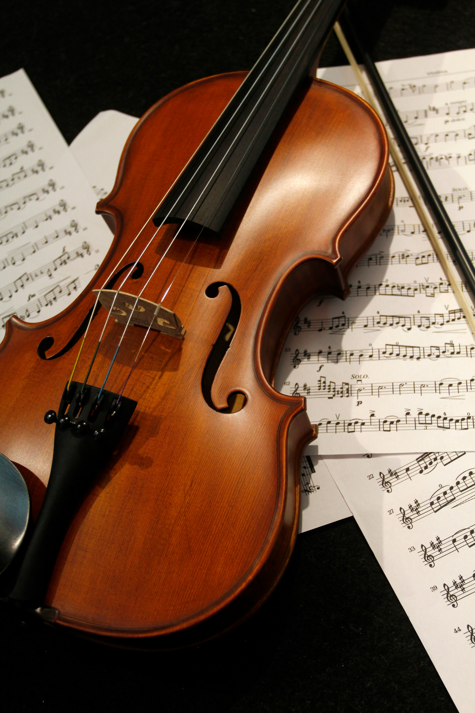
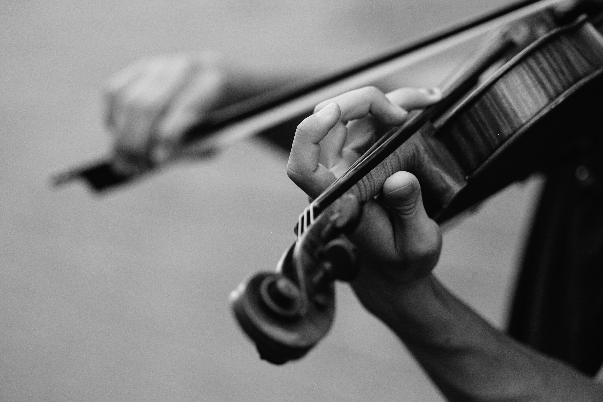

Description:
The violin is the smallest and highest-pitched instrument in the traditional string family. It is known for its bright, expressive sound and is commonly used in orchestras, chamber groups, solo music, and many styles such as classical, folk, and bluegrass. The main parts of a violin include the scroll, tuning pegs, neck, fingerboard, strings, bridge, body, sound holes, chin rest, tailpiece, and bow.

How to Play the Violin:
The violin is usually played by drawing a bow across the strings while pressing the strings against the fingerboard with the fingers of the opposite hand. Different notes are produced by changing where the strings are pressed. The violin can also be played by plucking the strings with the fingers, a technique called pizzicato.
